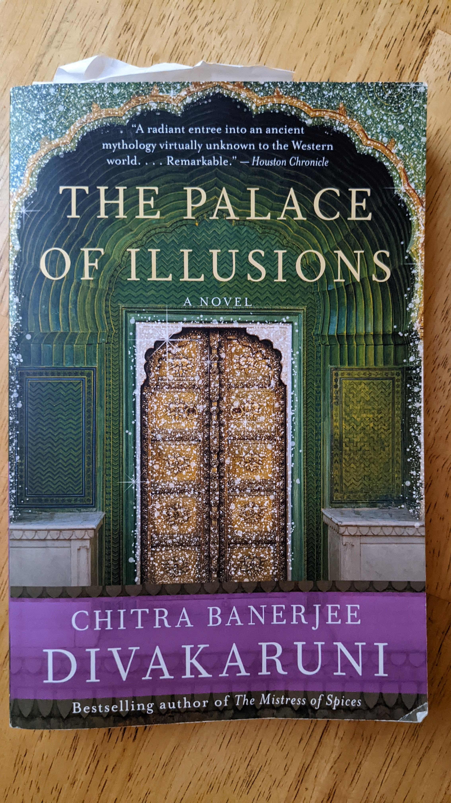
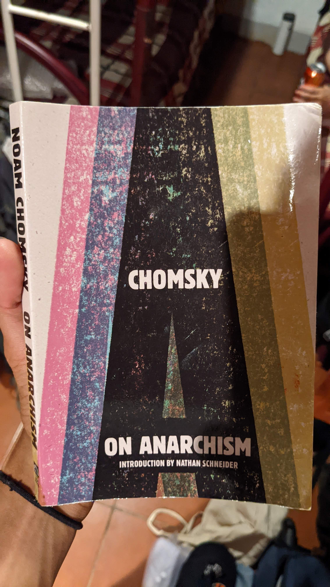
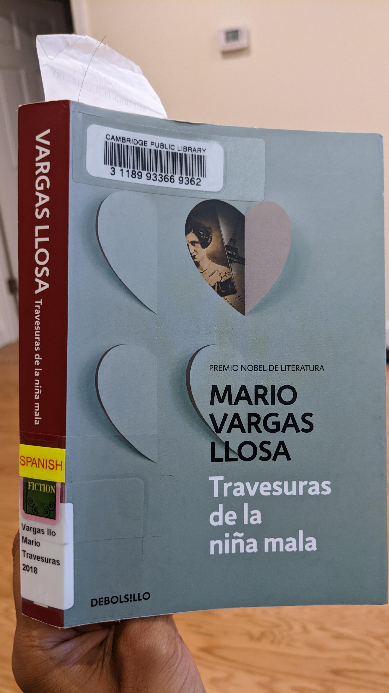
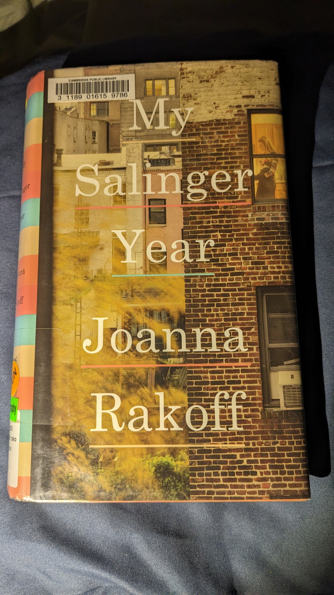

The F-Word Spring 2021 Volume (January)
The Vegetarian by Han Kang (January Bonus Round!)
Ecotone Issue 30 (February)
Freedom National by James Oakes (Febrary Bonus Round!)
Rethinking the Judicial Settlement of Reconstruction by Pamela Brandwein (March)
The Day that Freedom Died by Charles Lane (March Bonus Round!)
The Original Meaning of the 14th Amendment by Evan Bernick and Randy Barnett (April)
The Kingdom of Ordinary Time by Mary Szybist (April Bonus Round!)
Beyond the Gender Binary by Alok Vaid-Menon (May)
Native Guard by Natasha Trethewey (May Bonus Round!)
The Palace of Illusions by Chitra Banerjee Divakaruni (June)
From Newgate to Dannemora by W. David Lewis (July)
Objects from April to May by Zena Agha (July Bonus Round!)
The Forest of Enchantments by Chitra Banerjee Divakaruni (July Bonus Round!)
Parachutes Could Carry Us Higher by Hallmark Editions (August)
On Anarchism by Noam Chomsky (August Bonus Round!)
We Rose Up Slowly by Jon Gresham (August Bonus Round!)
The Tradition by Jericho Brown (September)
Travesuras de la Niña Mala by Mario Vargas Llosa (October)
The Hurting Kind by Ada Limón (October (ish) Bonus Round!)
Blue Earth Review (November)
Great Exodus, Great Wall, Great Party by Chessy Normile (December)
My Salinger Year by Joanna Rakoff (December Bonus Round!)See also:
- (At Least) 12 Books in 12 Months - 2017
- (At Least) 12 Books in 12 Months - 2018
- (At Least) 12 Books in 12 Months - 2019
- (At Least) 12 Books in 12 Months - 2020
- (At Least) 12 Books in 12 Months - 2021

In case you're wondering, the "F-word" is "feminism." This was a literary journal my friend (Sabrina Ochoa) worked on while she was an undergrad at the University of Pennsylvania. I borrowed her copy of the issue, along with The Vegetarian below, when we both stayed in Cambridge over winter break. My favorite pieces of writing were Inspired by Jenny Slate, In Parts by Rachel Dennis; Mother of Misunderstandings by Fayyaz Vellani; Tenderloin by Sophia DuRose; I Know You Are (But What Am I?) by Elysia Baskins; Female Gaze by Kelly Huang; Cosmic Asymmetry by Elysia Baskins; Compensatory Damages by Sophia DuRose; and growing pains by Emily Campbell. My favorite pieces of artwork were In Bloom by Alyssa Sliwa (the cover art); The Victim by Alyssa Sliwa (depicting Medusa as fearful, rather than angry); and Feast on Thyself by Diane Lin (which was spooky, like the next book I read).

Another book I borrowed from Sabrina over winter break, this spooky novel is about a Korean woman who decides to become a vegetarian. The book is separated into three parts, the first following the woman, the second following her husband, and the third following her sister. (Spoilers follow).
The first "book" (section) of the novel follows the vegetarian herself, and we learn that the lifestyle shift is prompted by horrifying dreams the woman has that depict indescribable violence. These violent thoughts are part of a broader deterioration of the vegetarian's mental health throughout the course of the novel.
The second book follows the vegetarian's husband: a traditional man who is enraged by the lifestyle shift. This book has the most plot, and also describes an affair the man has with an artist. The book is a huge tonal shift from the previous book. I was impressed and moved by the description of the affair, which comes across as incredibly erotic.
The third book follows the vegetarian's sister as she visits the vegetarian in a mental health treatment center. This book presents an epiphany for the reader that the entire lifestyle shift was actually an expression of the vegetarian's inner child growing up in an abusive family. Even if the vegetarian's deterioration seemed completely out of the blue to others, it took a sister to know that the seeds of madness had been growing in the vegetarian for so long.
I have found that I rarely reach for fiction, but The Vegetarian reminded me that I am always shook by how intense of an experience it can be to read a novel.
As the semester began to pick up, I once again switched to focusing on short literary forms, like poetry, in my free time. Once again borrowing from Diana Cao, I got a copy of the latest venue to publish her work. I didn't read this issue cover-to-cover, and I didn't only read it in February. I paged through it throughout the semester, but this seemed like a reasonable place to include it in my reading catalog.
My favorite poem from the issue was White Spaces by Lisa Low. I have never felt as nonwhite as I have since coming to HLS. It’s not that I haven’t been surrounded by white people before—I grew up in a rural Appalachian town of 600 and went to college at a Texas state school (hook ‘em). Instead, it’s the pressure I’ve felt to intellectualize race for white people so they can perfectly comprehend a different perspective without leaving their comfort zone of the academy. Somehow, if they can’t feel solidarity for our liberation, it is only because we have failed to articulate our struggles and vision. I feel like this poem really shaped my thoughts on the matter, and I thought about it frequently throughout the semester.
"I promise myself to say 'white' more, even when it discomforts me."
I took a class called "Reconstruction Originalism" this semester as my elective. I was interested in the class for the "Reconstruction" part, and not so much for the "originalism" part. Reconstruction has fascinated me since I wrote a paper in high school about the historiography of the 14th amendment. The paper was for my AP US History class, which has been one of the most useful classes I have ever taken and was taught by one of the best teachers I've ever had (shout out to Mrs. Schgallis !!!). The research I did for that paper was really interesting, and I've remained interested in the Reconstruction era since then. It seems like the only time in history there was a real political will to reckon with racial subordination. That political will was assassinated along with Lincoln, and Reconstruction remains unfinished. I felt like I needed to learn more about the time period, specifically from a constituional law perspective.
Unfortunately, the curriculum for the class I took this semester was dominated by the "originalism" part, rather than the "Reconstruction" part of the title. The students were almost entirely white men somewhere on the conservative spectrum. The professor's thesis for the class was that originalism as an interpretive methodology could be used by progressives, and should not be conceded exclusively to conservatives. If true, that would be a useful direction to study because the current Supreme Court is nominally committed to originalism. However, at the end of the class, I'm just not convinced that thesis is true. I think originalism is definitionally a little-c conservative interpretive methodology, and I'm not confident it can be co-opted away from furthering big-C Conservative goals.
Anyways, back to this book. It was the first book we were assigned before the beginning of the class to provide some shared historical context. The book argues that, to the Republicans (and Abraham Lincoln in particular), the Civil War was about emancipation; the union/secession framing was merely nominal to bypass the constitutional barriers to interfering with slavery. The book got a little too deep into the weeds for my taste about specific actions taken by specific individuals in that time frame, so truth be told I ended up skimming a good chunk of it.
This was the book we focused on the most throughout the Reconstruction Originalism class. It was a book about the relevant cases that defined the Reconstruction era. Since it was written for a scholarly audience and published by an academic press, it was really dense. But by the end of the class and the end of my final paper for the class, I feel like I had a pretty good handle on the content of the book. It was a pretty good book for what it was, although I'm not sure who I would really recommend the book to; it doesn't really seem relevant to anybody who isn't enrolled in the class.
Another book for my Reconstruction Originalism class. This one was a narrative of the events surrounding the Colfax massacre. In Colfax, three people were killed by Black men, while the Ku Klux Klan and "law enforcement" killed close to to 60 Black men. The book focuses on a federal prosecutor as he tried but failed to secure convictions of the White Supremacist terrorists.
I'm gonna level with you: I kinda just skimmed this book for my Reconstruction Originalism class. I didn't feel like I was really getting a lot out of it.
I didn't like this one as much as I liked her other book of poetry! It was still fine, but not my favorite.
This little pamphlet by the South Asian nonbinary author and activist Alok Vaid-Menon was really interesting!
Didn't really say anything I didn't already know, but made me think that maybe I'll try on a sari at some point! That would be a cool cultural experience. Realized I don't actually know the difference between a sari, chaniya chori, and churidar.
I borrowed it from Anja Kalaba's bookshelf, who has the most impressive collection of queer literature I've ever seen. I really respect how intentionally and deliberately she seeks out information and books to learn more about LGBTQ+ issues. I stopped by Princeton after the semester ended and before my internship ended to hang out with old friends like Wynne and Anja. Anja was out of town, but that meant I got to crash in her bed during my trip, which worked out well.
Found this book of poetry at my local library and read it all in one sitting. It was nice to get lost in a book for a while.

Went to a local bookstore (McNally Jackson) next door to my internship looking for a book like Circe because that's what I was in the mood for. Stumbled across this book, which was a similar idea: a retelling of ancient mythology from the female character's perspective. Instead of Greek mythology, though, this book was about Hindu mythology. This book told the Mahabharat from Paanchali/Draupadi's perspective.
It was really good! Because my family is Jain, and I grew up far away from any sizable Indian community, I had never really gotten a good sense of the Hindu mythologies (Mahabharat and Ramayana). This book was a really cool overview of the story, and I feel much more familiar with the storyline and characters after having read it! This is exactly the level of familiarity I was looking for right now: not rigorous study of the religion, but at least a passing familiarity with the fables in the same way I have a general sense of Christianity, Greco-Roman theology, etc. This book fits in a theme with The Alchemist by Paolo Coehlo and Circe by Madeline Miller.
The book was written for a slightly younger audience than I was hoping for, but as a result I would definitely recommend it to any of my family members/younger cousins. I recommended it to my uncle for his daughters, and he said he would actually like to read it himself to get a new perspective on stories he had grown up with. I thought that was pretty cute.
This scholarly work is a history of New York state prisons constructed in the 1800s. Strange topic, but I read it as research for a memo I wrote for my internship at the Legal Aid Society of New York in the Prisoners' Rights Project. Our argument is that even if solitary confinement is permissible under the federal Constitution, it is not consistent with original New York state constitutional principles. The New York constitution was adopted in 1846, so we wanted to understand how New Yorkers viewed solitary confinement around that time frame.
I learned about solitary confinement around the adoption of the US Constitution in 1790s Pennsylvania, solitary confinement in the Pennsylvania model in the 1820s, and the "Auburn model" of confinement that was New York's rejection of the Pennsylvania model.
The author gave some weird vibes, but the substantive information from the book was useful.
This book of poetry by a Palestinian author was recommended in the groupchat for the cultural trip I took to Palestine last Spring Break. I was able to purchase the audiobook even if the physical book is only available in the UK. I really liked it!
The book also made me think about my relationship with gold jewelry. I wear a gold chain my late grandmother gave me, which I think is subtle and tasteful. But as I've been thinking about the performance of gender lately, I've thought about integrating more jewelry into my life to subvert gender expectations. My aunt has given me a copper bracelet that I wear often now. My fingers are oddly shaped so rings seem out of the question. I don't like how anklets look when wearing shoes. My next step will be to add a subtle pendant to my necklace.
Anyways, here were some poems I liked from this collection:
Talisman (4) love the format poetry, where the words themselves form a map of Palestine
TODO
I enjoyed The Palace of Illusions from June so much that I sought out the complementary book by the same author. Rather than depicting the Mahabharat like Palace of Illusions, did The Forest of Enchantments depicts the Ramayana from Sita's perspective.
Personally, I like this story less than the Palace of Illusions, but I think it is written more skillfully.
While seeking out this book, I realized I have actually read other books by the same author when I was a kid! I read two of her earlier books: The Conch Bearer and The Mirror of Fire and Dreaming. I remember them being interesting when I was a kid, but I think the two books I have read more recently are more relevant for a broader audience.
I found this little book of poems for sale at my local library for like a dollar! It was written in the early 70s about the changing world and the imminent future. Fifty years later, it was interesting to see how the world did or did not turn out the way the authors of the poems imagined.
Some poems I liked from this collection:
TODO

I traveled to Costa Rica for two and a half weeks after my internship ended to learn spanish and to learn how to surf. My daily schedule was the dream: I would spend four hours in Spanish classes in the morning, eat lunch, spend two hours surfing, and then just hang out for the rest of the day. On this trip, I stayed at one very dreamy hostel called Botella de Leche, and found this book on the bookshelf!
It was very interesting, and shifted my perspective on what the ideology of anarchy actually represents. There was one chapter that was historical context about a specific anarchist community that I got really bored of and skipped, but other than that the book gave me useful vocabulary for concepts that I have thought about frequently.
Here are some quotes from the book that I found particularly valuable:
TODO
After returning from Costa Rica, I took the train up to Boston for the beginning of the school year. I snagged this book off my bookshelf from home to read on the train. This collection of short stories was gifted to me four years ago by the same friend who had recommended I read Stories of Your Life by Ted Chiang. I had never gotten around to reading it, and now that I finally did it was a good opportunity to reconnect with an old friend :')
The stories were entertaining enough for me to finish the book in one fell swoop on the train ride! They were a bit melancholic for my taste, but not necessarily in a bad way.
Found this book of poetry from Raven books, a local used book store! Some poems I liked from this collection: Foreday in the Morning (pg. 14); Bullet Points (pgs. 16-17); Shovel (pgs. 36-37).

Okay so this was a big one for me. You may remember in June and July of 2017 I read another book by this author. That book had been a double biography translated from the author's original Spanish into French, and I had found it on a hostel bookshelf while traveling in Spain with my sister. It remains, to this day, the book that I am the most proud of having read. It was so big and so intimidating and in such a foreign language. But when I finished it, I felt like I had accomplished something. I had proved to myself that I could slowly but surely make my way through any piece of reading, and I had learned a lot of French along the way! That book is the reason I'm still conversational in French seven years after learning it in high school. At the time, though, I had already had my eyes on learning Spanish next, and I regretted reading a translation of this author's work.
So imagine my surprise when I found this book! It's a soap opera in the author's original Spanish that I found on a hostel bookshelf while traveling in Costa Rica to learn Spanish! I was now much more confident in my ability to read a book like this, and it had much more simple concepts to grasp because it was so heavily plot-driven. Reading it definitely jet started my Spanish skills, but i still have a long way to go. I'm looking forward to the journey!
Finally, a word on the book. It was hilarious. It follows two Peruvian lovers -- la niña mala (the bad girl), and el niño bueno (the good boy) -- over the course of their entire lives and across three continents. Without giving away too many spoilers, they find themselves in a repeated pattern where she will marry a rich man, they will have a secret affair, she will abandon both men to disappear to a foreign land, and in the beginning of the next chapter they will find themselves in the same city for the process to repeat.
I loved this passage in particular:
TODOBorrowed this book from Diana! It is organized in seasons, so I am reading the Fall poems in the fall, the Winter poems in the winter, and so on.
A note from the following spring: this collection has really grown on me as the seasons go by! I knew how popular Ada Limón was and I felt that I wasn't getting as much out of the poems as other people seemed to. One thing that didn't click for me at first was that I felt all the poems were a tad too sad. But two things changed: first, I read some truly pessimistic poems in These Trees, Those Leaves, This Flower, That Fruit that juxtaposed sharply, and second, I found myself returning fondly to poems I had read before when I sat down to read new ones.
Some poems I have liked from this collection: Lover (pg. 77); Hooky (pg. 65); The Hurting Kind (pg. 78); And, Too, the Fox (pg. TODO).
Borrowed this book from a poet and my friend Juliana Chang! Her piece is Artemis contemplates the catcall. I also really like A Crock of Onion by Holly Bergman (pg. 79). The entire collection was very short so I was able to read it cover to cover on my flight to Thanksgiving.
This was another book I borrowed from Juliana. I've already returned it and I forgot to note which poems I had liked.

TODO
I read a lot this year that I don't know how to include in this blog post because it doesn't qualify as reading a book from cover to cover. I feel like reading shaped my life this year just as it does every year. But I feel like not all of those pieces are reflected here. For example: some of the most influential pieces I read this year were in my Feminist Legal Theory class where the professor excerpted the most relevant pieces for us from larger works. I think that is fine, but just wanted to flag that this list feels incomplete as I look over it. Some additional pieces I liked include:
In retrospect: I think my favorite books this year were The Vegetarian by Han Kang; The Palace of Illusions by Chitra Banerjee Divakaruni; On Anarchism by Noam Chomsky; Travesuras de la Niña Mala by Mario Vargas Llosa; and The Hurting Kind by Ada Limón. Here's to the books that shaped my 2022, and to all the books still out there for next year